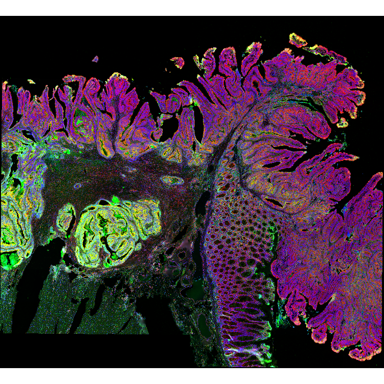
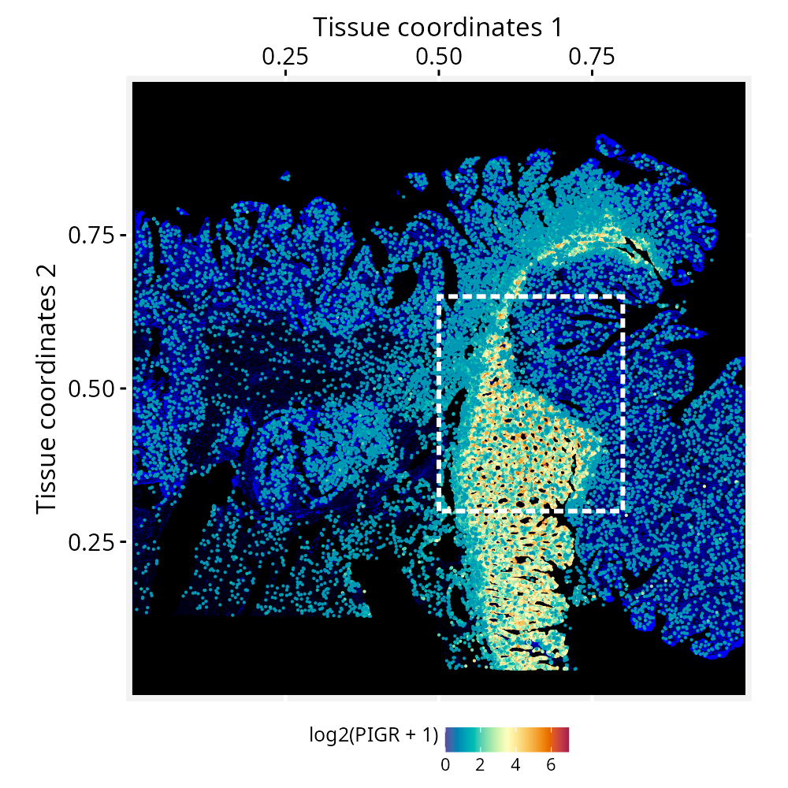
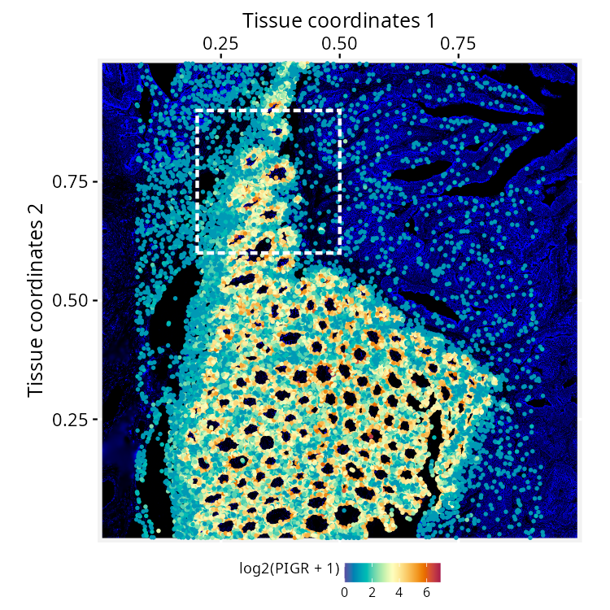
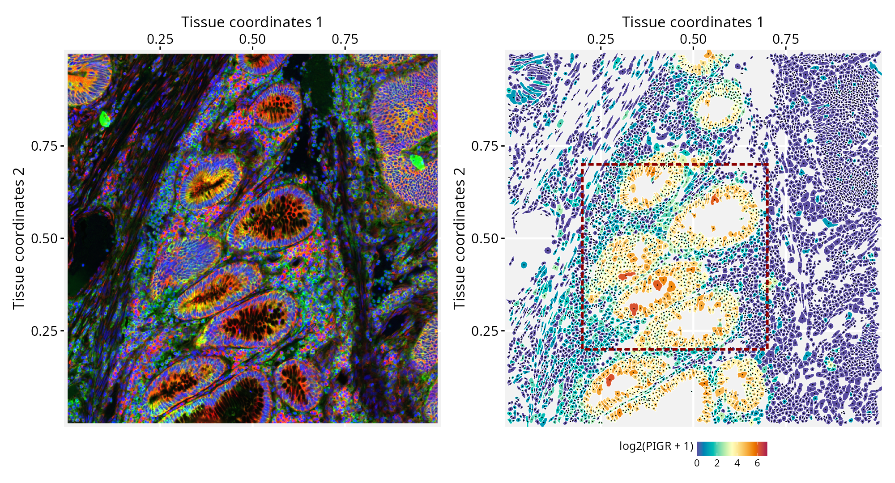
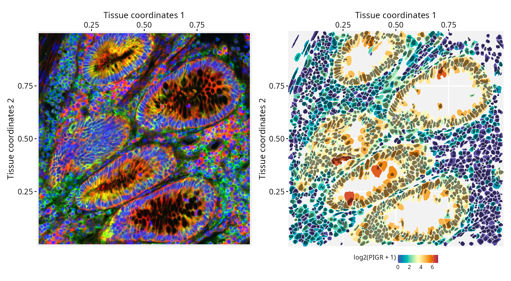
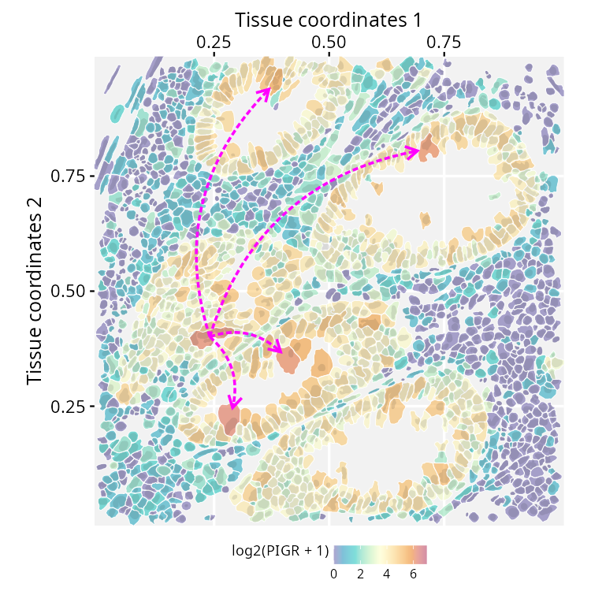

Working with nested geometries and high-resolution images
Sysbiolab Team
2026-09-06
Source:vignettes/articles/nested-geometries.Rmd
nested-geometries.RmdPackage: RGraphSpace 1.5.4
Overview
This tutorial demonstrates how RGraphSpace works with nested
geometries and high-resolution images. We will use data from the same
study on human colorectal cancer (CRC) tissue featured in our spatial-segmentation2
vignette, but from the Xenium In Situ dataset (Oliveira et al. 2025). Although this dataset
targets a focused panel of ~420 genes (541 total features, including
controls), it provides higher-resolution single-cell boundaries for
mapping subcellular localization. To handle the large tissue image,
RGraphSpace stores it as a lazy SpatRaster object
and renders only the region under view, keeping memory manageable even
for multi-gigapixel images.
Before you start
This vignette assumes familiarity with SpatialExperiment (Righelli et al. 2022), particularly for handling Xenium spatial transcriptomics data.
Note: If you are new to SpatialExperiment, we recommend reviewing the OSTA’s Xenium Workflow before proceeding.
Computational requirement:
Hardware: Workstation with RAM ≥ 32 GB (≥ 64 GB for higher-resolution image levels)
Software: R (≥4.5); RStudio recommended
Required packages
Before proceeding, ensure that all packages described in the Installation Instructions are installed.
# Check versions
if (packageVersion("RGraphSpace") < "1.5.4"){
message("Need to update 'RGraphSpace' for this vignette")
remotes::install_github("sysbiolab/RGraphSpace")
}Setting input data
# Load packages
library("RGraphSpace")
library("SpatialFeatureExperiment")
library("sf")
library("terra")
library("patchwork")Download the dataset
The Xenium In Situ, Sample P2 CRC dataset (Oliveira et al. 2025) is available from the 10x
Genomics repository. The repository provides a batch download option
from the terminal, using wget or curl; the
wget command is reproduced below, selecting the relevant
files for this tutorial.
Loading with SpatialFeatureExperiment
We load the dataset with readXenium(), importing both
the cell and nucleus segmentations, and assign unique gene symbols to
the row names.
# Set path to data directory
localdir <- "path/to/data/directory"
# Load data from 'localdir'
sfe <- readXenium(localdir, segmentations = c("cell", "nucleus"), flip = "none")
# Assign unique symbols to rownames
rownames(sfe) <- make.unique(rowData(sfe)$Symbol)The Xenium image is a four-channel fluorescence stack, where each channel captures a different aspect of tissue morphology: DAPI (nuclei), membrane markers (cell boundaries), 18S rRNA (cytoplasm), and αSMA/Vimentin (stroma). To use it as a spatial background, we load the stack as a SpatRaster object, which lets us combine channels into a false-color RGB image.
# Xenium 'morphology_focus' is a 4-channel fluorescence image:
# [[1]] DAPI (nuclei)
# [[2]] ATP1A1 / E-Cadherin / CD45 (cell boundaries)
# [[3]] 18S rRNA (cytoplasm)
# [[4]] alphaSMA / Vimentin (stroma)
# The downloaded image is an OME-TIFF pyramid consisting of four
# files, each containing multiple resolution levels
bfi <- SpatialExperiment::getImg(sfe, image_id = "morphology_focus")
# Check resolution levels:
# Smaller index = finer resolution (1L = full, 4L = coarse)
RBioFormats::read.metadata(imgSource(bfi))
#> series res sizeX sizeY sizeC sizeZ sizeT total
#> 1 1 31395 34224 4 1 1 4
#> 1 2 15697 17112 4 1 1 4
#> 1 3 7848 8556 4 1 1 4
#> 1 4 3924 4278 4 1 1 4
#> ...
# Extract one pyramid level and write it to disk at 4L
# (we used 2L resolution for the plots in this tutorial)
sri <- toSpatRasterImage(bfi, resolution = 4L)
# Read the extracted level as a SpatRaster, keeping the raster
# data on disk until accessed
r_spat <- terra::rast(imgSource(sri))
# Quick visual check, rotated 90° clockwise.
# We down-sample BEFORE rotating: Transforming the full-resolution
# raster can cause a crash or memory overflow.
r_small <- terra::spatSample(r_spat, size = 4e5,
method = "regular", as.raster = TRUE)
terra::plotRGB(terra::trans(terra::flip(r_small, "vertical")),
r = 3, g = 2, b = 1, stretch = "lin")For this RGB image we set the fluorescence channels to show ‘cytoplasm’ in red, ‘cell boundaries’ in green, and ‘nuclei’ in blue.

Creating a GraphSpace object
Convert the SpatialFeatureExperiment object into a
GraphSpace.
# Coerce 'SpatialFeatureExperiment' to 'GraphSpace'
gs <- as.GraphSpace(sfe, assay = "counts")Attach tissue image and geometries
# Add tissue image
gs_image(gs) <- r_spat
# Add cell geometry
gs_geometry(gs, "cell_geometry") <- cellSeg(sfe)
# Add nucleus geometry
gs_geometry(gs, "nucleus_geometry") <- nucSeg(sfe)Unlike datasets with pre-aligned image and coordinates, this Xenium data needs a pixel-per-micron scale factor to align the graph with the attached tissue image, converting between the node coordinates (in microns) and the image (in pixels). We derive this factor from the image’s extent and dimensions: the square root of the pixel-to-micron area ratio gives pixels per micron.
# Image area in microns (from the spatial extent)
e <- terra::ext(r_spat)
area_microns <- (e$xmax - e$xmin) * (e$ymax - e$ymin)
# Image area in pixels (nrow x ncol)
d <- dim(r_spat)
area_pixels <- (d[1] * d[2])
# Linear scale factor: pixels per micron
lsf <- sqrt( area_pixels / area_microns )
#-- this print shows lsf computed for 4L resolution
#-- (see Xenium image load)
lsf
#> 0.5882353
# Set the scale factor on the GraphSpace object
gs_scale_factor(gs) <- lsfNormalize node and geometry coordinates
Next, we examine the spatial boundaries of the nodes relative to the image. The node coordinates fall within the image dimensions.
gs
#> A GraphSpace-class object for:
#> IGRAPH fec0602 UN-- 340837 0 --
#> + attr: x (v/n), y (v/n), name (v/c), nodeLabel (v/c), nodeSize (v/n),
#> | transcript_counts (v/n), control_probe_counts (v/n), control_codeword_counts
#> | (v/n), unassigned_codeword_counts (v/n), deprecated_codeword_counts (v/n),
#> | total_counts (v/n), cell_area (v/n), nucleus_area (v/n), sample_id (v/c),
#> | arrowType (e/n)
#> + node payload: 2 (cell_geometry, nucleus_geometry)
#> + features: 541 (ABCC8, ACP5, ACTA2, ADH1C, ...)
#> + samples: 340837 (aaaadaba-1, aaaadgga-1, ...)
#> + node spatial boundaries: raw graph
#> | x: [12, 3915] (cols)
#> | y: [11, 4277] (rows)
#> + image spatial boundaries: raw image
#> | x: [1, 3924] (cols)
#> | y: [1, 4278] (rows)We normalize the node coordinates to the image space, with
norm.geometry = TRUE so the cell and nucleus polygons are
normalized alongside the nodes. We then rotate the object to match the
orientation of the tissue image shown above.
# Normalize node coordinates to the image space
# -- this may take a few secs due to the large number of geometries!
gs <- normalizeGraphSpace(gs, mar = 0, norm.geometry = TRUE)
# Rotate to match the tissue image orientation
gs <- rotateGraphSpace(gs, clockwise = TRUE)Spatial feature visualization
# Inspect the data range
# log2(range(gs[["fdata"]]) + 1)
# Set color palette and data range for use across plots
cpal <- hcl.colors(100, palette = "Spectral", rev = T)
data_range <- c(0, 7)
# Set a reusable theme
my_theme <- theme_gspace_coords(theme = "th3", is_norm = TRUE,
xlab = "Tissue coordinates 1", ylab = "Tissue coordinates 2")We now plot the full coordinate space with nodes colored by PIGR expression over the tissue image, and cells showing no expression made transparent. A box marks a region of interest to crop next. For this wide view, we set the background image to one channel, with ‘cytoplasm’ in blue.
# Plot node-level PIGR expression over the tissue image;
# a box marks the region of interest
p <- ggplot(gs) +
annotation_gspace_image(gs, rgb_channels = c(NA, NA, 3)) +
geom_nodespace(mapping = aes(colour = log2(PIGR + 1),
alpha = as.numeric(PIGR > 0) ), size = 0.3, pch = 19) +
scale_colour_continuous(palette = cpal, limits = data_range) +
scale_alpha_identity() + my_theme +
annotate("rect",
xmin = 0.5, xmax = 0.8,
ymin = 0.3, ymax = 0.65,
colour = "white", fill = NA,
lty = "21", lwd = 1)
p
As we crop into smaller regions, RGraphSpace re-renders the
viewed window into a display canvas whose resolution is capped by
maxpixels. Because this fixed pixel budget now covers a
smaller area, zooming in yields progressively finer detail. The default
works well in most cases.
# Current pixel budget for the display canvas (adjustable if needed)
gs_image_maxpixels(gs)
#> 4e+06
# Crop to the marked region and re-normalize coordinates to the new space
gs_crop1 <- cropGraphSpace(gs,
xmin = 0.5, xmax = 0.8,
ymin = 0.3, ymax = 0.65)
gs_crop1 <- normalizeGraphSpace(gs_crop1, mar = 0, norm.geometry = TRUE)
gs_crop1 <- rotateGraphSpace(gs_crop1, clockwise = TRUE)Zooming further, a second box outlines a smaller region for a closer view.
# Plot the cropped region; a second box marks the next crop
p <- ggplot(gs_crop1) +
annotation_gspace_image(gs_crop1, rgb_channels = c(NA, NA, 3)) +
geom_nodespace(mapping = aes(colour = log2(PIGR + 1),
alpha = as.numeric(PIGR > 0)), size = 0.7, pch = 19) +
scale_colour_continuous(palette = cpal, limits = data_range) +
scale_alpha_identity() + my_theme +
annotate("rect",
xmin = 0.2, xmax = 0.5,
ymin = 0.6, ymax = 0.9,
fill = NA, colour = "white",
lty = "21", lwd = 1)
p
Crop to this smaller region.
# Crop to the smaller region and re-normalize coordinates
gs_crop2 <- cropGraphSpace(gs_crop1,
xmin = 0.2, xmax = 0.5,
ymin = 0.6, ymax = 0.9)
gs_crop2 <- normalizeGraphSpace(gs_crop2, mar = 0, norm.geometry = TRUE)
gs_crop2 <- rotateGraphSpace(gs_crop2, clockwise = TRUE)At this resolution, the real cell segmentation boundaries can be drawn side-by-side with the corresponding tissue image, alongside the node centroids. In this plot, we can observe the high-definition tissue image on the left and its correct alignment with cell segmentation on the right. The RGB image features ‘cytoplasm’ in red, ‘cell boundaries’ in green, and ‘nuclei’ in blue.
p1 <- ggplot(gs_crop2) +
annotation_gspace_image(gs_crop2, rgb_channels = c(3, 2, 1)) +
my_theme
p2 <- ggplot(gs_crop2) +
geom_sf( aes(geometry = cell_geometry, fill = log2(PIGR + 1) ),
colour = adjustcolor("white", 1)) +
geom_nodespace(colour = "black", size = 0.1, pch = 19) +
scale_fill_continuous(palette = cpal, limits = data_range) +
my_theme + annotate("rect",
xmin = 0.2, xmax = 0.7,
ymin = 0.2, ymax = 0.7,
fill = NA, colour = "red4",
lty = "21", lwd = 1)
p1 + p2
# Crop to the smaller region and re-normalize coordinates
gs_crop3 <- cropGraphSpace(gs_crop2,
xmin = 0.2, xmax = 0.7,
ymin = 0.2, ymax = 0.7)
gs_crop3 <- normalizeGraphSpace(gs_crop3, mar = 0, norm.geometry = TRUE)
gs_crop3 <- rotateGraphSpace(gs_crop3, clockwise = TRUE)Finally, we reach a zoom level that allows us to examine subcellular structures (left), with cell and nucleus segmentations overlaid as nested geometries (right). The cell geometries are filled according to PIGR expression levels, while the nucleus outlines are shown in semi-transparent black.
p1 <- ggplot(gs_crop3) +
annotation_gspace_image(gs_crop3, rgb_channels = c(3, 2, 1)) +
my_theme
p2 <- ggplot(gs_crop3) +
geom_sf( aes(geometry = cell_geometry,
fill = log2(PIGR + 1) ), colour = "white") +
geom_sf( aes(geometry = nucleus_geometry),
fill = adjustcolor("black", 0.5), colour = NA) +
scale_fill_continuous(palette = cpal, limits = data_range) +
my_theme
p1 + p2
Downstream graph manipulation
RGraphSpace is primarily designed for graph rendering and expects graphs to be prepared before they enter the RGraphSpace workflow. More extensive graph manipulation is therefore generally best performed upstream, while preparing the data used as input to RGraphSpace.
Nevertheless, downstream analyses may require accessing and modifying
a GraphSpace object to explore alternative graph
configurations or highlight specific subsets of the data. For example,
the following code selects the five cells with the highest expression of
the PIGR gene, adds arbitrary directed edges connecting them,
and renders the resulting subgraph as an additional layer on top of the
original visualization.
# Subgraph containing the 5 cells with the highest PIGR expression
gs_subset <- gs_crop3 |>
gs_subset_nodes(rank(-PIGR) <= 5)
# Create directed edges from the highest-ranked cell to all others
edges <- data.frame(
from = gs_subset$name[1],
to = gs_subset$name[-1],
arrowType = 1)
# Add the edges to GraphSpace
gs_subset <- gs_add_edges(gs_subset, value = edges)
# Add the subgraph as a new layer with its own graphical representation
p <- ggplot(gs_crop3) +
geom_sf( aes(geometry = cell_geometry,
fill = log2(PIGR + 1) ), colour = "white") +
geom_sf( aes(geometry = nucleus_geometry), alpha = 0.1,
fill = adjustcolor("black", 0.5), colour = NA) +
geom_edgespace(data = gs_subset, colour = "magenta",
curve = 0.3, lwd = 0.8, lty = "21", arrow_size = 1) +
scale_fill_continuous(palette = adjustcolor(cpal, 0.5),
limits = data_range) +
my_theme
p
This deliberately naive example illustrates one possible approach to downstream graph manipulation. The edges have no specific biological meaning and are included solely to demonstrate how a graph can be modified at this later stage of the pipeline.
Session information
#> R version 4.6.1 (2026-06-24)
#> Platform: x86_64-pc-linux-gnu
#> Running under: Ubuntu 24.04.4 LTS
#>
#> Matrix products: default
#> BLAS: /usr/lib/x86_64-linux-gnu/openblas-pthread/libblas.so.3
#> LAPACK: /usr/lib/x86_64-linux-gnu/openblas-pthread/libopenblasp-r0.3.26.so; LAPACK version 3.12.0
#>
#> locale:
#> [1] LC_CTYPE=en_US.UTF-8 LC_NUMERIC=C
#> [3] LC_TIME=en_US.UTF-8 LC_COLLATE=en_US.UTF-8
#> [5] LC_MONETARY=en_US.UTF-8 LC_MESSAGES=en_US.UTF-8
#> [7] LC_PAPER=en_US.UTF-8 LC_NAME=C
#> [9] LC_ADDRESS=C LC_TELEPHONE=C
#> [11] LC_MEASUREMENT=en_US.UTF-8 LC_IDENTIFICATION=C
#>
#> time zone: America/Sao_Paulo
#> tzcode source: system (glibc)
#>
#> attached base packages:
#> [1] stats graphics grDevices utils datasets methods base
#>
#> other attached packages:
#> [1] patchwork_1.3.2 terra_1.9-34
#> [3] sf_1.1-2 SpatialFeatureExperiment_1.14.0
#> [5] RGraphSpace_1.5.4 ggplot2_4.0.3
#>
#> loaded via a namespace (and not attached):
#> [1] RColorBrewer_1.1-3 rstudioapi_0.19.0
#> [3] jsonlite_2.0.0 wk_0.9.5
#> [5] magrittr_2.0.5 TH.data_1.1-5
#> [7] ggbeeswarm_0.7.3 magick_2.9.1
#> [9] farver_2.1.2 rmarkdown_2.32
#> [11] fs_2.1.0 ragg_1.5.2
#> [13] vctrs_0.7.3 spdep_1.4-2
#> [15] DelayedMatrixStats_1.34.0 RCurl_1.98-1.19
#> [17] htmltools_0.5.9 S4Arrays_1.12.0
#> [19] BiocNeighbors_2.6.0 Rhdf5lib_2.0.0
#> [21] s2_1.1.11 SparseArray_1.12.2
#> [23] rhdf5_2.56.0 LearnBayes_2.15.2
#> [25] sass_0.4.10 spData_2.3.5
#> [27] KernSmooth_2.23-27 bslib_0.11.0
#> [29] htmlwidgets_1.6.4 desc_1.4.3
#> [31] fontawesome_0.5.3 sandwich_3.1-3
#> [33] zoo_1.8-15 cachem_1.1.0
#> [35] igraph_2.3.3 lifecycle_1.0.5
#> [37] pkgconfig_2.0.3 Matrix_1.7-6
#> [39] R6_2.6.1 fastmap_1.2.0
#> [41] MatrixGenerics_1.24.0 digest_0.6.39
#> [43] S4Vectors_0.50.1 dqrng_0.4.1
#> [45] textshaping_1.0.5 GenomicRanges_1.64.0
#> [47] beachmat_2.28.0 spatialreg_1.4-3
#> [49] abind_1.4-8 compiler_4.6.1
#> [51] proxy_0.4-29 withr_3.0.3
#> [53] backports_1.5.1 S7_0.2.2
#> [55] tiff_0.1-12 BiocParallel_1.46.0
#> [57] DBI_1.3.0 HDF5Array_1.40.0
#> [59] R.utils_2.13.0 MASS_7.3-66
#> [61] DelayedArray_0.38.2 rjson_0.2.23
#> [63] classInt_0.4-11 tools_4.6.1
#> [65] units_1.0-1 vipor_0.4.7
#> [67] otel_0.2.0 beeswarm_0.4.0
#> [69] R.oo_1.27.1 glue_1.8.1
#> [71] h5mread_1.4.0 nlme_3.1-170
#> [73] EBImage_4.54.0 rhdf5filters_1.24.0
#> [75] grid_4.6.1 generics_0.1.4
#> [77] gtable_0.3.6 R.methodsS3_1.8.2
#> [79] class_7.3-24 tidyr_1.3.2
#> [81] data.table_1.18.4 tidygraph_1.3.1
#> [83] sp_2.2-1 XVector_0.52.0
#> [85] BiocGenerics_0.58.1 pillar_1.11.1
#> [87] limma_3.68.4 splines_4.6.1
#> [89] dplyr_1.2.1 lattice_0.23-1
#> [91] survival_3.8-9 deldir_2.0-4
#> [93] tidyselect_1.2.1 SingleCellExperiment_1.34.0
#> [95] locfit_1.5-9.12 scuttle_1.22.0
#> [97] sfheaders_0.4.5 knitr_1.51
#> [99] IRanges_2.46.0 Seqinfo_1.2.0
#> [101] edgeR_4.10.1 SummarizedExperiment_1.42.0
#> [103] stats4_4.6.1 xfun_0.59
#> [105] Biobase_2.72.0 statmod_1.5.2
#> [107] DropletUtils_1.32.0 matrixStats_1.5.0
#> [109] fftwtools_0.9-11 yaml_2.3.12
#> [111] boot_1.3-32 evaluate_1.0.5
#> [113] codetools_0.2-20 tibble_3.3.1
#> [115] cli_3.6.6 systemfonts_1.3.2
#> [117] jquerylib_0.1.4 dichromat_2.0-1
#> [119] Rcpp_1.1.2 zeallot_0.2.0
#> [121] coda_0.19-4.1 png_0.1-9
#> [123] ggrastr_1.0.2 parallel_4.6.1
#> [125] pkgdown_2.2.0 jpeg_0.1-11
#> [127] marginaleffects_0.32.0 sparseMatrixStats_1.24.0
#> [129] bitops_1.0-9 SpatialExperiment_1.22.0
#> [131] mvtnorm_1.4-1 scales_1.4.0
#> [133] e1071_1.7-17 purrr_1.2.2
#> [135] rlang_1.3.0 multcomp_1.4-31